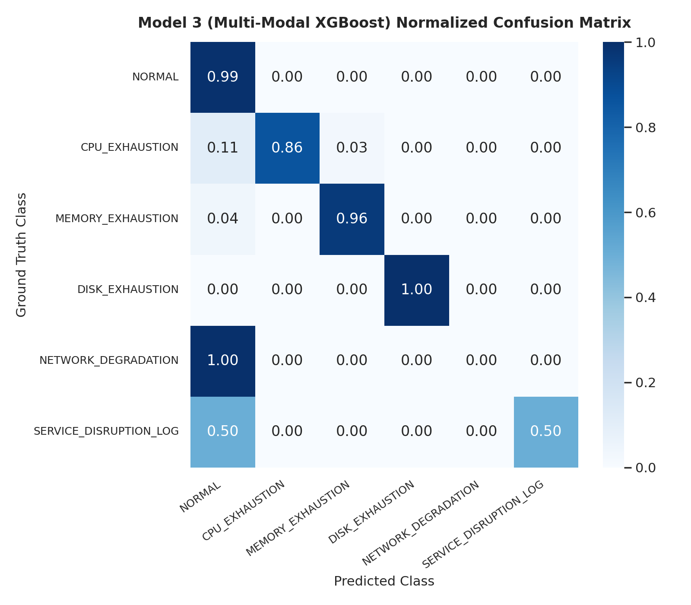

03 // PHASE 1 EMPIRICAL DIAGNOSTIC VISUALIZATIONS
Generated from Held-Out Test Split (k8s_multimodal_test.csv)
1. 4-Model Ablation Progression

2. 6-Class Normalized Confusion Matrix

3. Top 20 Multi-Modal Feature Importances

4. Regime B Early-Warning Lead Time (Mean 4.7m)

phase1_prediction/plots/
Slide 4 / 6